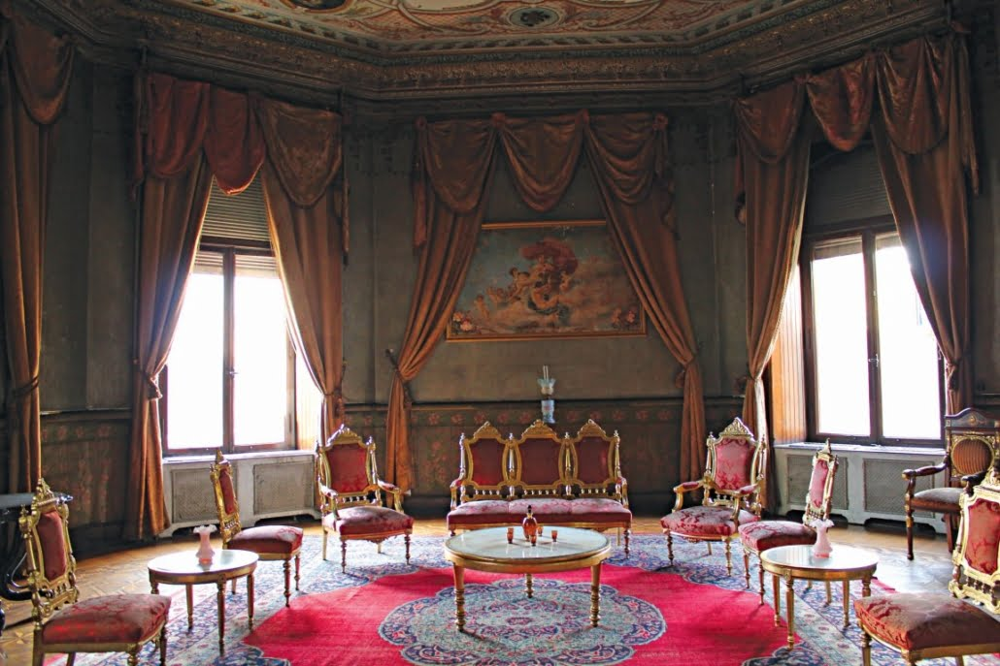
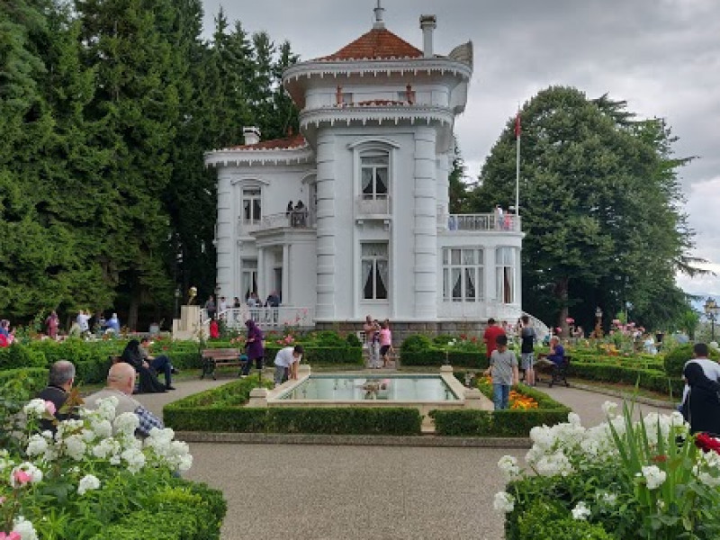
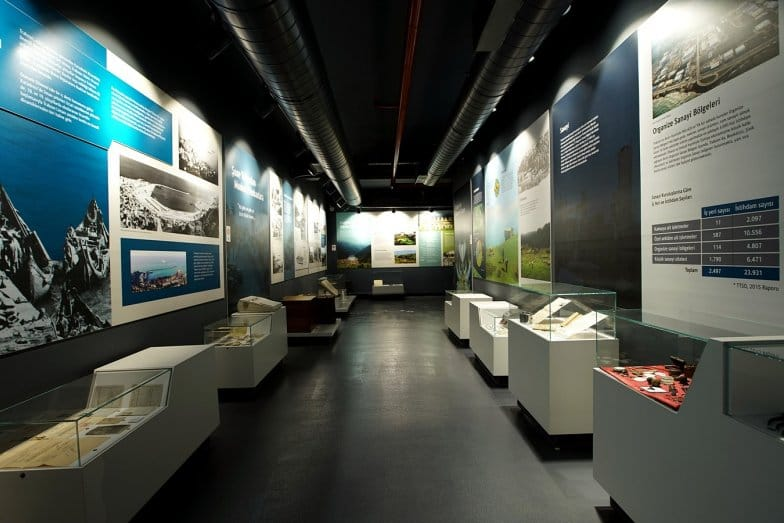
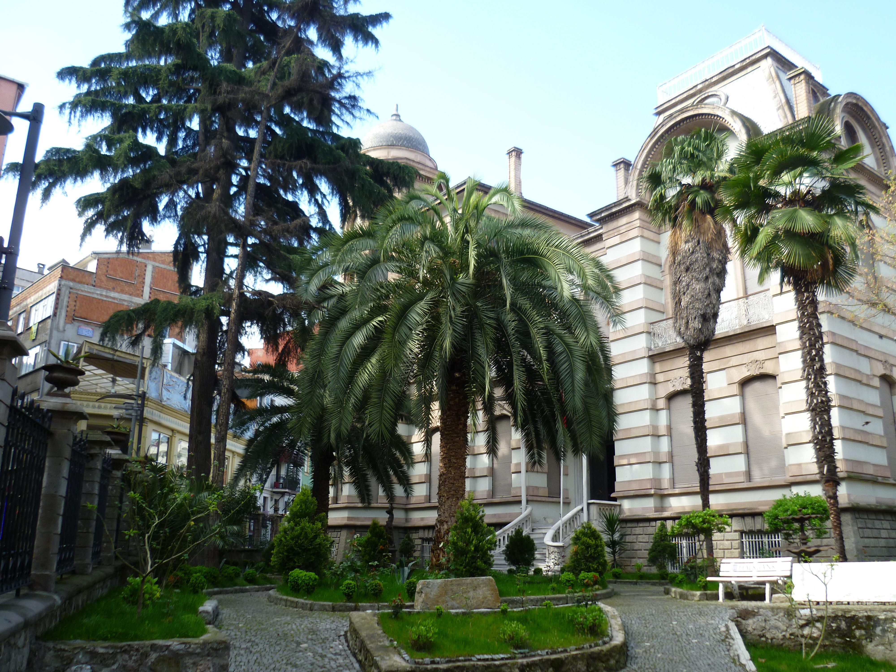

1900'lü yılların başında inşa edilen bu konak, hem mimarisiyle hem de arkeolojik ve etnografik koleksiyonlarıyla dikkat çeker.
Adres: Zeytinlik Mah., Ortahisar/Trabzon
Ziyaret Saatleri: Her gün 08:30 – 17:30
Giriş: Ücretsiz

Çam ağaçları arasında yer alan köşk, Atatürk'ün Trabzon ziyaretlerinde konakladığı ve bazı kararlarını aldığı yerdir.
Adres: Soğuksu Mah., Ortahisar/Trabzon
Ziyaret Saatleri: Her gün 09:00 – 17:00
Giriş: Ücretsiz

Trabzon’un tarihini, kültürünü ve sosyal yaşamını interaktif sergilerle anlatan modern bir müzedir.
Adres: Kahramanmaraş Cad. No:4, Ortahisar/Trabzon
Ziyaret Saatleri: Pazartesi hariç her gün 09:00 – 17:00
Giriş: Ücretsiz

Trabzon'un geçmişine ait fotoğraflar, belgeler ve objelerle zenginleştirilmiş tematik bir müzedir.
Adres: Ortahisar Mah., Ortahisar/Trabzon
Ziyaret Saatleri: Her gün 08:00 – 18:00
Giriş: Ücretsiz